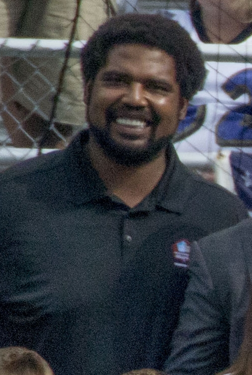

Jonathan Ogden
A Left Tackle Legend
Jonathan Ogden had a huge impact on the Baltimore Ravens both on and off the field. On the field, he was a dominant left tackle who helped protect the quarterback and open up running lanes for the offense. Off the field, he was a leader and role model for his teammates, and was involved in many charitable organizations in the Baltimore community. Jonathan Ogden's impact on the Baltimore Ravens cannot be overstated. He was a driving force behind the team's success, both on and off the field. His leadership and work ethic were an inspiration to his teammates, and his involvement in the community made him a beloved figure in Baltimore. Jonathan Ogden has many notable achievements, many of which were not done by a left tackle. He was inducted into the Pro Football Hall of Fame in 2013, and was also named to the NFL's 2000s All-Decade Team. Off the field, he was involved in many charitable organizations, including the United Way and the Baltimore School for the Arts.
Notable Seasons:
| Season | Total Tackles | Sacks | Interceptions |
|---|---|---|---|
| 2001 | 162 | 3.5 | 3 |
| 2003 | 163 | 1.5 | 6 |
| 2012 | 57 | 1.0 | 0 |
Jonathan Ogden had an outstanding career with the Baltimore Ravens, but his three most notable seasons would have to be 2000, 2003, and 2006. In 2000, Ogden was a key part of the Ravens' Super Bowl-winning team, as he helped protect quarterback Trent Dilfer and open up running lanes for the offense. In 2003, he was named the NFL's Offensive Lineman of the Year, and helped lead the Ravens to a 10-6 record. In 2006, he was once again named to the Pro Bowl, and helped anchor an offensive line that allowed the fewest sacks in the league. For more detailed stats or notable records, visit the Pro Football Reference stat page for Jonathan Ogden, which can be found here.